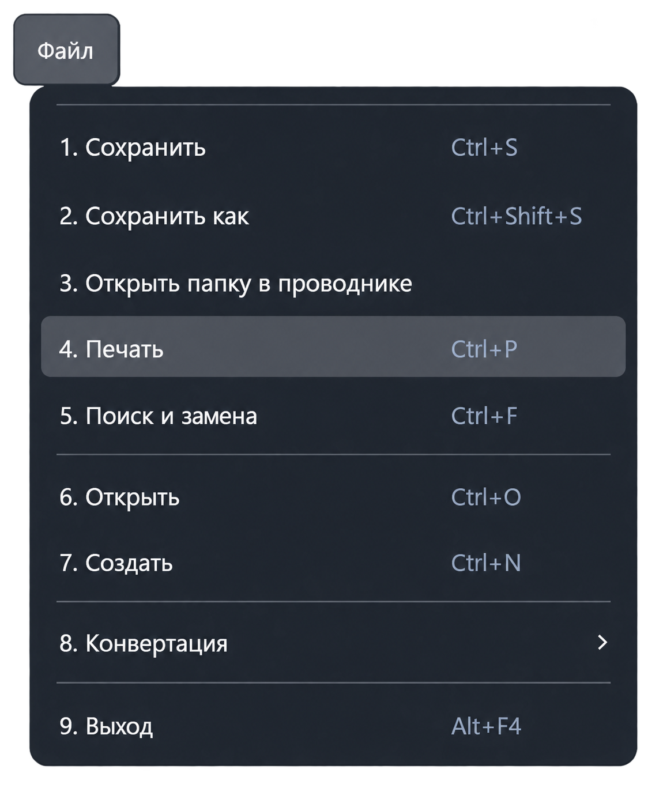

Функция «Печать»
Команда «Файл → Печать» печатает текст активного документа. Выберите нужную вкладку текстового редактора перед вызовом команды.
Сочетание клавиш: Ctrl + P.

Порядок печати
- Откройте документ и сделайте его вкладку активной.
- Вызовите команду «Печать» или нажмите Ctrl + P.
- В системном диалоге выберите принтер и доступные параметры печати.
- Подтвердите отправку на печать либо отмените диалог.
Что отправляется на печать
Приложение получает текущий текст редактора, разбивает его на строки и формирует печатный документ. Изменения, ещё не записанные на диск, входят в печатаемый текст. Пустой текст на печать не отправляется.
Печатается содержимое документа, а не снимок интерфейса: панели, вкладки и элементы управления в печатный документ не входят.
Печать не сохраняет изменения файла. При необходимости предварительно используйте «Сохранить». Работа с протоколами также имеет отдельные средства печати.